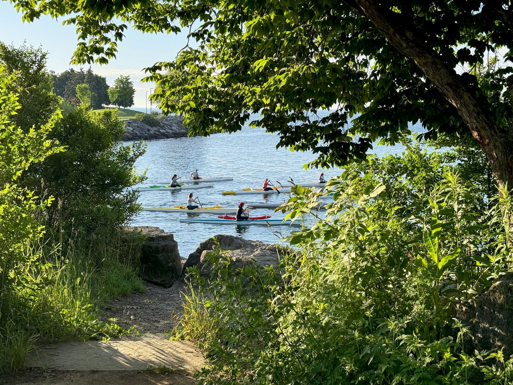

Surf Office Alternatives: Choosing a Retreat Partner in Europe
Comparing Surf Office alternatives for your company retreat: what to look for, the different types of planners, and how to choose the right fit for your team.
Surf Office is one of the longest-established company retreat organisers in Europe, known for curated venues and complete retreat packages for teams of all sizes. If you're comparing options, here is what to look at, and where other partners may suit your team better.
What Surf Office is known for
- Long experience organising company retreats in Europe and beyond.
- Curated venues across many destinations.
- Complete packages covering venue, programme and activities.
- Experience with remote and distributed teams.
What to compare between retreat partners
1. Flights
Does the partner book the flights of every participant, from every city, and coordinate arrivals? For distributed teams this changes everything: one budget, one schedule, one contact when plans change.
2. Personal service
Who answers when you call? Is it the same person before and during the trip?
3. Price transparency
Is there one price per person that includes everything, flights included?
4. Destinations
Do they know the destinations you are considering personally?
5. Group size
Some partners are best for small teams, others for large kickoffs.

Alternatives to consider
- Venue marketplaces with planners, such as TeamOut, for a large venue choice.
- Specialist retreat organisers, such as Lá Fora in Portugal.
- French seminar platforms, such as Naboo or Kactus, for French teams.
- Local DMCs for single-destination expertise.
See our full overview of retreat planners in Europe.
Where Permanent Summer Voyages fits
We combine 35 years of travel agency experience with international hospitality and company retreat expertise. Teams choose us for:
- Every participant's flight, booked and coordinated from their own city.
- One budget per person, flights included.
- One payment partner: you pay only us, in two stages. First we secure the destination, venue, meals, meeting room and flights; then we finalise activities, special dinners and transfers.
- A call with our expert, then tailored proposals.
- A real person reachable seven days a week during the trip.
We love surf retreats too: see our surf retreat guide and Ericeira.
Make your choice
Talk to our expert to receive proposals you can compare like for like, flights included. Or estimate your budget with our calculator.
Frequently asked questions
What is Surf Office?
Surf Office is a company retreat organiser that plans offsites and team retreats with curated venues, programmes and activities.
What should I compare between retreat organisers?
Whether every participant's flight is included, the level of personal service, price transparency, destination knowledge and experience with your group size.
Do I need a surf-focused company for a surf retreat?
No. Any good retreat partner can organise surf lessons with local schools as part of a wider programme.
Let's plan your team's next retreat
Venue, programme, activities and every participant's flight, handled by one team. It starts with a call with our expert.
Keep reading
All articles
The Best Company Retreat Planning Companies in Europe
An honest overview of company retreat planners in Europe, what each type does well, the questions to ask, and how to choose the right partner for your team.

Surf Retreats for Teams: Ericeira, Taghazout and Beyond
Why surf retreats work so well for teams, the best surf destinations for company offsites, how to mix lessons with workshops, and what beginners should know.

TeamOut Alternatives: How to Choose the Right Retreat Partner
Looking for TeamOut alternatives? A fair comparison of retreat planning options in Europe and the key questions to ask, including who books your team's flights.